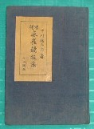

日本麻雀草創期の先駆者。
以前、中村徳三郎の来歴について「詳細は不詳」と記したが、先般、子孫の方よりメールを頂いた。それによって、少しではあるが、来歴が判明した。それによると、中村徳三郎は本名を金澤熊郎（かなざわくまお）ということであった。
当時 日本の植民地であった大連にて雀荘を営み、その後銀座にて当時珍しかった雀荘を経営し 麻雀牌の輸入業にも手を染めたという。
大正13年10月に刊行された「麻雀競技法（千山閣）」は入門書であるが、学究書としての価値が高い。たとえば冒頭に写真で紹介された数々の中国古典牌は、麻雀研究上、重要な資料となっている。また同書に記された天女散華についての記述は、幻の天女散華牌に触れたコメントとして有名。このような古典牌の収録が可能であったのも、氏が麻雀牌の輸入業に携わっていたからだと思われる。
千山閣という出版社も中村徳三郎が経営にかかわっていたらしい（発行者の「金澤ツル」は熊郎の妻）。
麻雀競技法の表紙見返しに「麻雀詩」という一文が紹介されている。麻雀詩といっても、いわゆる漢詩ではなく、散文という感じ。詳細はこちら。
また麻雀競技法の裏表紙に本物の馬吊カードが添付してある。これは販促アイデアとして著者のコレクションを添付したもの。１冊ごとに違うカードなので、すべて購入すると馬吊カードが全部そろう。
 
ただし馬吊カードは、１セット60枚くらいであるが、本は60部しか出版されなかったわけではない。そこで馬吊カードは何種類も使用された。そのなかから同じ種類だけ60枚そろえるためには、この本をかなり買わなければならない。となれば中国へ出かけて買った方が早いかも....（^-^；
また別著の「麻雀疑問解答(S3・千山閣)」は、林茂光「麻雀競技法とその秘訣」、榛原茂樹の「麻雀精通」と並んで、戦前の麻雀研究書ベスト３の１冊に数えられる。
|